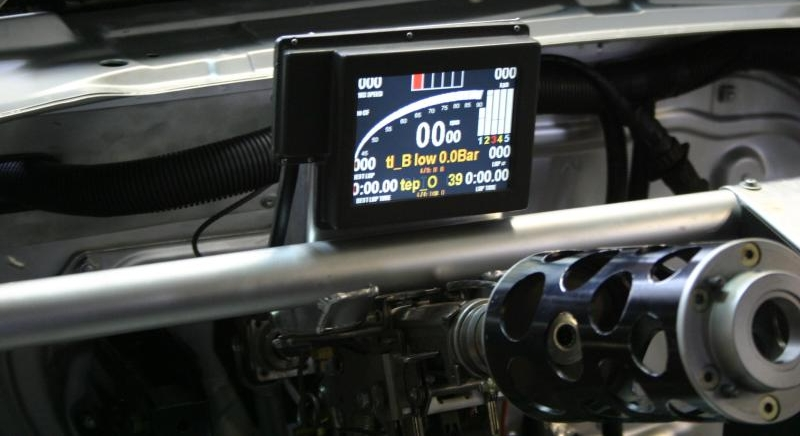
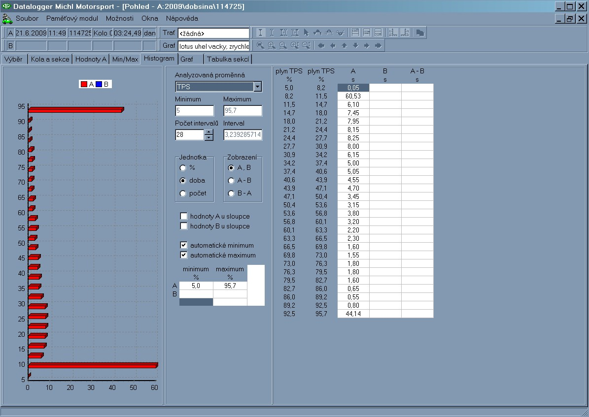
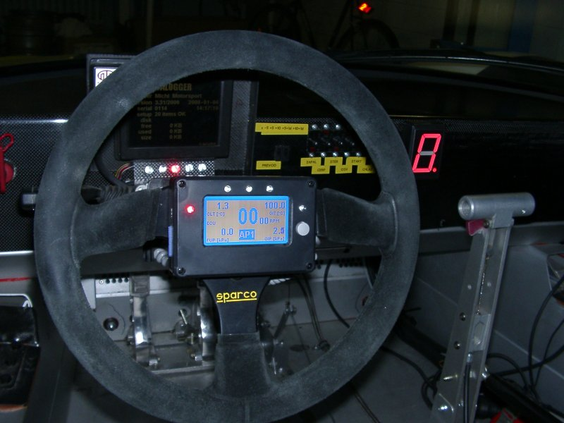
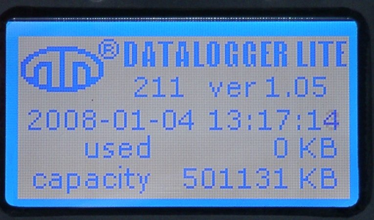
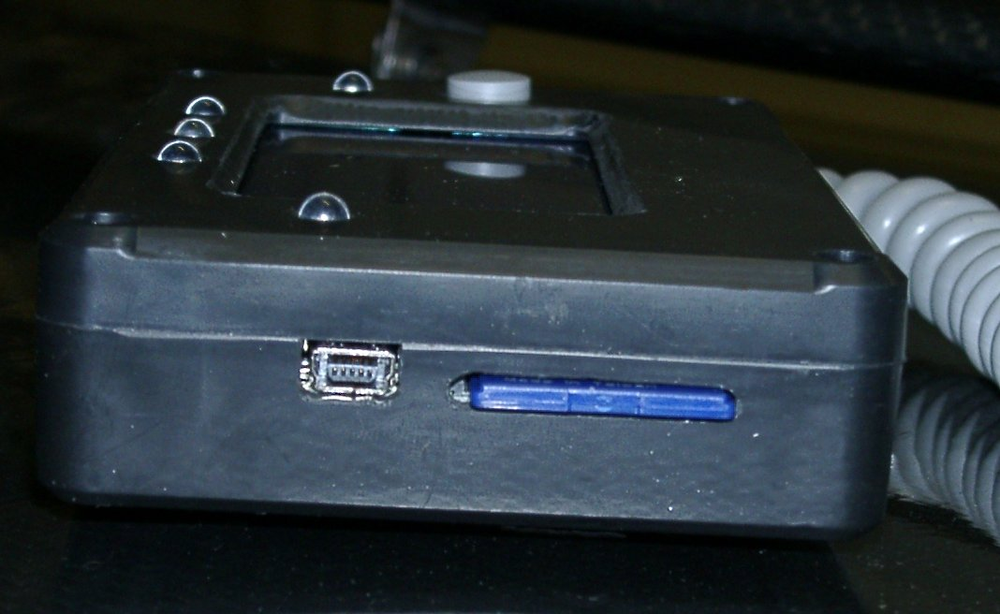
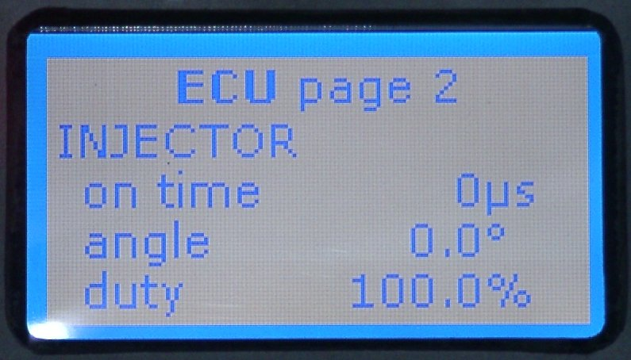
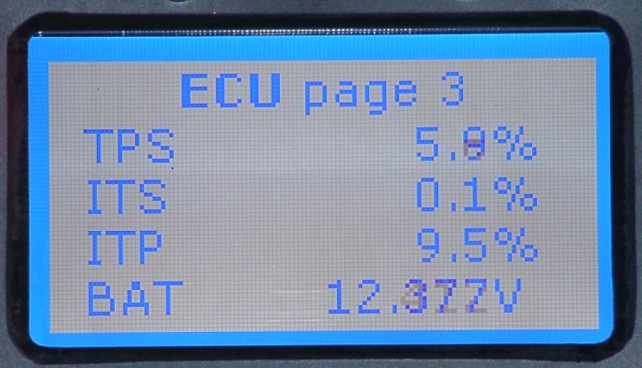
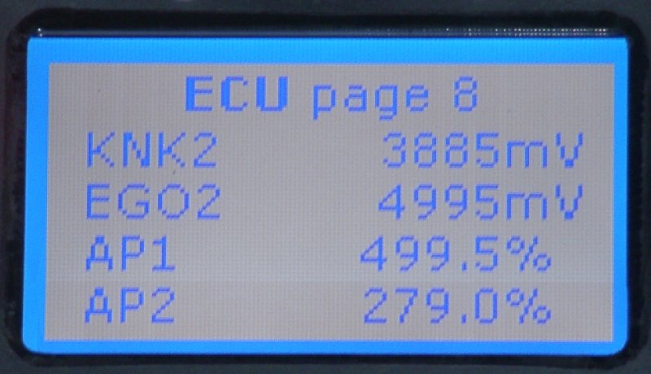

elektronika
DATALOGGER

Základní popis přístroje:
Přístroj je určen k záznamu průběhu jízdy automobilu, při které jsou trvale monitorovány a průběžně zapisovány pevně přiřazené i uživatelsky zvolené parametry motoru, respektive jízdy vozu.
Přístroj se sestává ze základní části, umístěné na vhodném místě ve vozidle a napájené z palubní sítě 12V a ze zobrazovacího modulu s barevným displejem TFT s rozlišením 320 × 240, který se umísťuje na přístrojové desce. Záznam monitorovaných parametrů s navolenou četností dat se provádí na paměťové médium typu USB Flash Disk. Tento typ výměnného disku se používá u stolních i přenosných počítačů. V současné době existují disky s kapacitou přes 1GB. Disk je přímo přístupný na libovolném počítači vybaveném rozhraním USB. Zaznamenané parametry se vyhodnocující prostřednictvím dodávaného uživatelského programu.
Rozměry základní jednotky jsou 145x145x32 mm, hmotnost základní jednotky 700 g s připojovacím kabelem 700 mm, hmotnost displeje je 700 g
Základní modul má 16 analogových a 5 impulsních vstupů, interně snímá vestavěnými snímači hodnotu zrychlení ve všech třech osách, napájecí napětí palubní sítě a zálohovacího akumulátoru. Čtyři z pěti impulsních vstupů jsou optimalizovány pro připojení induktivních snímačů otáček kol. Zbývající impulsní vstup je určen pro měření otáček motoru.

Použité analogové vstupy mají kvantovací chybu 0,1 %. Rozsah všech analogových vstupů je 0 až 5 V. Vstupy 0, 1, 3 a 8, 9, 11 jsou osazeny pracovními odpory pro měření odporových čidel s hodnotu 4700 ohm. Vstupy 2 a 10 mají pracovní odpory s hodnotou 820 ohm. Na přání uživatele mohou být tyto hodnoty změněny, případně osazeny i odpory pro další kanály.

Další specializované vstupy a výstupy jsou:
- snímací dioda měřiče časomíry
- přepínač map řídící jednotky motoru ECU MM
- výstup pro LED indikující překročení nastavených hodnot
- výstup pro čtyři LED pro indikaci doporučeného řazení
- sériová linka pro připojení řídící jednotky motoru ECU MM
- sériová linka pro připojení PC k řídící jednotce motoru ECU MM

Na zadní straně základního modulu jsou vyvedeny 3 kabely se šroubovacími konektory AMP, pro připojení analogových a impulsních vstupů, sériové linky pro připojení řídící jednotky motoru, přepínače map, ovladače základní jednotky, časomíry, napájení 12V. Jeden z kabelů je určen pouze na připojení zobrazovací části. Na přední straně modulu je umístěn USB konektor typu A pro zasunutí USB Flash disku nebo prodlužovacího kabelu a konektor Cannon DB-9 pro připojení PC.

Ovládání přístroje se provádí pomocí točítka a tlačítka. Je také varianta, kde místo tlačítka je použito přímo stisknutí točítka. V ovládání se rozpoznávají tyto základní stavy:
- otočení točítka doprava … posuv na další položku menu nebo obrazovku
- otočení točítka doleva … posuv na následující položku menu nebo obrazovku
- krátkodobý stisk točítka (tlačítka) … potvrzení zvýrazněné položky nebo vstup do menu nebo průjezd kolem (pouze při zobrazené měřící obrazovce)
- dlouhodobý stisk točítka (tlačítka) … postupné vyskočení z menu nebo ukončení měření menu (pouze při zobrazené měřící obrazovce)
- Při změně hodnot se snímá i rychlost otáčení točítka. Se zvyšující rychlostí otáčení se zvyšuje i velikost kroku.
Přístroj je napájen trvalým napětím 12V (automobilní svorka 30), zapínání se provádí signálem ON/OFF, na který se přivede spínací napětí +12V. Spínací napětí může být trvalé (spínač, např. 15 od klíčku) a potom jeho odstranění znamená vypnutí přístroje, nebo krátkodobé (tlačítko), potom přivedení napětí způsobí zapnutí nebo vynutí přístroje. Pro zapnutí i vypnutí je nutné tlačítko chvíli podržet.
Práce s USB Flash diskem:
Každé spuštění záznamu vytvoří na disku nový soubor. Soubor bude umístěn v adresáři YY-MM-DD a bude mít jméno HHMMSS.RAW. Význam uvedených symbolů je následující:
YY desetiletí
MM měsíc
DD den v měsíci
HH hodina
MM minuta
SS sekunda
Disk se na displeji identifikuje svou jmenovkou (volume label). V případě více současně používaných disků je vhodné pojmenovat kartu např. jménem závodníka. Doporučuje se používat pouze písmena bez diakritiky.


Máte dotazy? Napište nám na info@michl-motorsport.cz nebo zavolejte +420 5 41 42 43 44
*******************************************************************************************************************************
DATALOGGER LITE --- PALUBNÍ DESKA PRO ECU MM

Zařízení je určeno pro sledování parametrů ECU MM za jízdy automobilu a k jejich ukládání na paměťovou kartu. Součástí dodávky je SD karta o velikosti 512 MB, která pojme záznam až z celoročního provozu závodního auta.

Hmotnost přístroje je 230 g včetně kabelu a karty,
rozměry 120 x 80 x 26 mm.
Displej je LCD monochromatický, s regulovatelným podsvícením,
velikost displeje je 65 x 35 mm.

Ovládá se jediným tlačítkem a jeho ovládání je velmi jednoduché.
Krátký stisk tlačítka zobrazí následující obrazovku, dlouhý stisk cca 2 sekundy spouští a zastavuje záznam.
Zařízení na displeji v základním zobrazení ukazuje aktuální hodnotu čtyř přednastavených veličin z řídící jednotky, aktuální otáčky motoru a v případě překročení nastavené meze u kterékoliv veličiny z řídící jednotky název této veličiny. Zařízení má celkem 5 indikačních kontrolek s jasně svítivými LED. Oranžová kontrolka na pravé straně přístroje indikuje upozornění na překročení nastavené hodnoty veličiny, červená kontrolka na levé straně přístroje pak alarm překročení nastavené hodnoty. Každou z těchto mezí je možné nastavit nezávisle pro každou veličinu, a to buď jako indikaci při překročení dané meze, nebo indikaci nedosažení dané meze. Nad displejem jsou tři indikační kontrolky pro řazení, z nichž každé lze přidělit v nastavení přesné otáčky, kontrolky jsou na sobě plně nezávislé. U všech kontrolek lze nezávisle nastavit jas. Dvě boční kontrolky mají zelenou barvu, prostřední je žlutá.

Na levém boku přístroje je USB port a štěrbina pro zasunutí paměťové karty. USB port se používá jen pro nastavení času v přístroji. Změna nastavení přístroje se provádí editací konfiguračního souboru v PC a následným nahrátím souboru do kořenového adresáře paměťové karty. Po vložení do přístroje a jeho zapnutí se nastavení nahraje do paměti automaticky.
Seznam zobrazených veličin (zkratka - veličina - jednotka)
 1.
obrazovka veličin
1.
obrazovka veličin- rychlost kph (km/h)
- otáčky motoru rpm (ot/min)
load zátěž motoru -
CAM úhel vačky °
advance předstih °

2. obrazovka veličin
on time doba vstřiku ms
angle úhel vsřiku °
duty využití motoru %
3. obrazovka veličin
TPS poloha klapky %
ITS poloha volnoběžné klapky %
ITP požad. poloha vbolnoběžné klapky %
BAT napětí baterie V
 4.
obrazovka veličin
4.
obrazovka veličinKNK napětí detonačního čidla mV
EGO hodnota lambda sondy mV
EGOL1 korekce lambdy 1 ml
EGOL2 korekce lambdy 2 ml
 5.
obrazovka veličin
5.
obrazovka veličinMAT teplota nasávaného vzduchu °C
CLT teplota vody °C
FUT teplota paliva °C
OIT teplota oleje °C
 6.
obrazovka veličin
6.
obrazovka veličinMAP tlak v sání kPa
BAP barometrický tlak kPa
FUP tlak paliva kPa
OIP tlak oleje kPa
 7.
obrazovka veličin
7.
obrazovka veličinHDT teplota hlavy °C
MAV objem nasávaného vzduchu g/s
SLIP skluz hnaných kol %
CAM2 úhel sekundární vačky °
8. obrazovka veličin
KNK2 napětí sekundárního det. Čidla mV
EGO2 hodnota sekundární lambdy mV
AP1 pedál akcelerátoru 1 %
AP2 pedál akcelerátoru 2 %

9. obrazovka veličin
FHP vysoký tlak paliva FSI Mpa
AI6 pomocný vstup mV
SETTING pořadové číslo a název použitého nastavení
Máte dotazy? Napište nám na info@michl-motorsport.cz nebo zavolejte +420 5 41 42 43 44